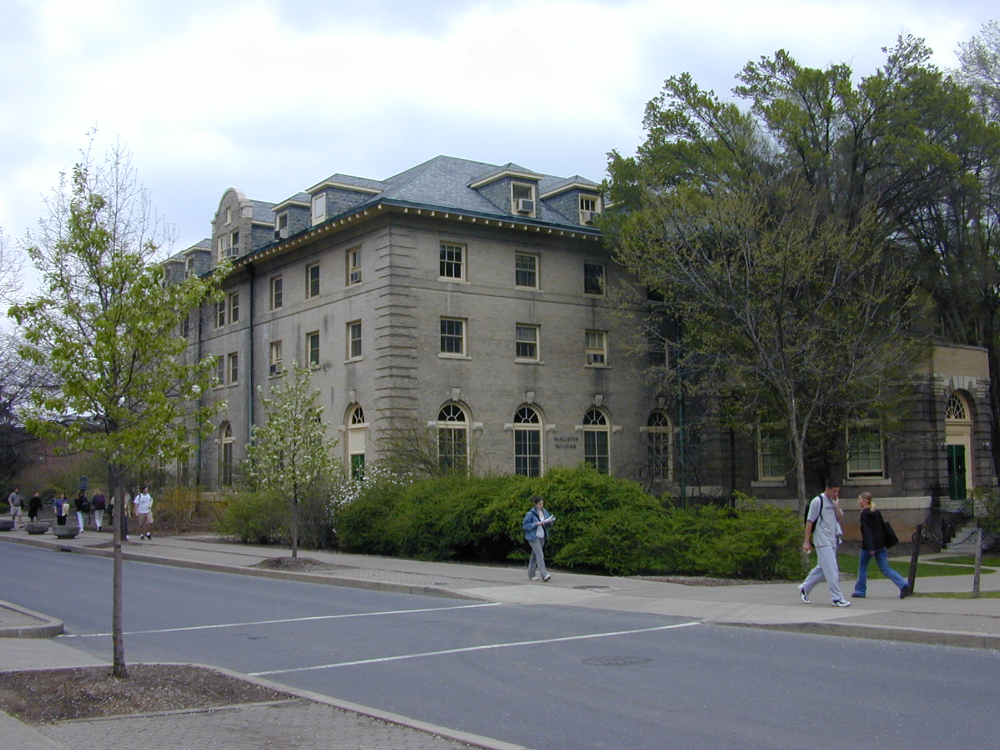

List of Pictures
in jpeg format
L.N.Vaserstein (March 22,2000, 205 MB) large
| smaller
Old (scanned): garden | apt | Bejing 1987|
New York, December of 1999 (large) : an
apartment
| A.Toom
1
| A.Toom 2
Israel , March 2000 (large size):
Old
Jerusalem | Old
Jerusalem
2 | Jerusalem
| Done
of Rock | Western Wall
| Massada
| Caesaria
| Grottos
| Rosh
Hanikra
| Haifa
| Jaffa
| Israel
| Tel-Aviv
New York, March 2000: Leon
|
Mathematicians: A.Ranicki
March
27, 2000, 205 MB
Steve Miller, March 30, 2000: 205 MB | talk1 | talk2 .
I.Kra Sept
28, 2000
Nash Oct 2003 |
Ravi Rao | H. Bass
Nov. 2003|
March 2008: D. Fuchs
|
Fuchs, Ira Klumova, Kirillov
| A.Pomansky |
State College 2000: Rick
(grader) | Marcus Porembski
|
State College 2001: | NC
(grader,2001)
| dept. party Dec 2003 |
205 MB
| 
Armstrong
August 23, 2001| Anderson Febr 21,
2002
|
2002: Adrian
| Gowers
| webpage | Gowers2
| Zarhin
| Parshin
| John
| Sept. 2002 picnic with Dina by Diane
|
Leon 25 y with PSU, Aug
2004. Winnie 25 y with PSU.
2004 party.
2000 party.| Ken Gross at Tavern, Nov.4, 2010 |
t-mobilepictures
|
Other Links
| back
home